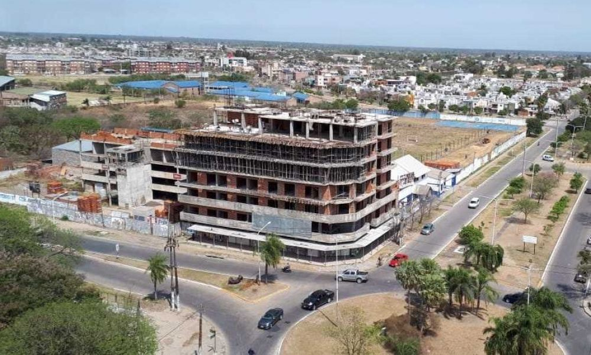

Un club que no pasa de moda
El Club Atlético Central Norte Argentino o más conocido como Central Norte, es una entidad deportiva de la ciudad de Resistencia, Chaco, Argentina. Fue fundado el 17 de octubre de 1926, Es uno de los clubes más antiguos de la ciudad, fue fundado por ex trabajadores del Ferrocarril Central Norte Argentino. He ahí la razón del nombre del club y la razón de su apodo: "el Ferroviario". El primer nombre fue Sportivo Central Norte y con esa denominación se afilió a la Liga Chaqueña de Fútbol (creada en 1926). Luego, en 1932 perdió temporalmente su personería, la cual recuperó en el transcurso de ese año y en ese momento fue bautizado como Club Atlético Central Norte Argentino, nombre que lleva con orgullo hasta la actualidad. En sus inicios el club utilizaba una camiseta íntegramente negra que emulaba al color de las locomotoras. Décadas más tarde adoptó el diseño actual de su casaca titular: franja azul horizontal sobre fondo blanco, la cual distingue al club hace más de 70 años. Central Norte siempre se caracterizó por tener una cantera de gran nivel, aportando jugadores que hicieron historia tanto a nivel local como nacional, entre ellos: Julio Elias Musimesi (el arquero cantor), Christian Gómez, Carlos Duarte, Aldo Visconti, Martio Bonfiglio, Rolando Veloso, entre tantos otros. Tras varios años en los que tuvo que luchar para conservar la categoría, hoy el club está resurgiendo desde lo futbolístico y avanzando a paso firme en lo institucional y edilicio. Las instalaciones cuentan con un moderno playón deportivo apto para múltiples disciplinas y comenzó la reforma integral del estadio de fútbol. Además (aunque ahora interrumpida por la pandemia de coronavirus) existe una intensa actividad con las diversas categorías de divisiones inferiores, desde los cinco años en adelante. Mantiene una gran rivalidad con Regional con quien se enfrenta en el llamado "Clásico de las Vías", debido a la historia que une a ambos clubes con las vías del tren de la ciudad.
